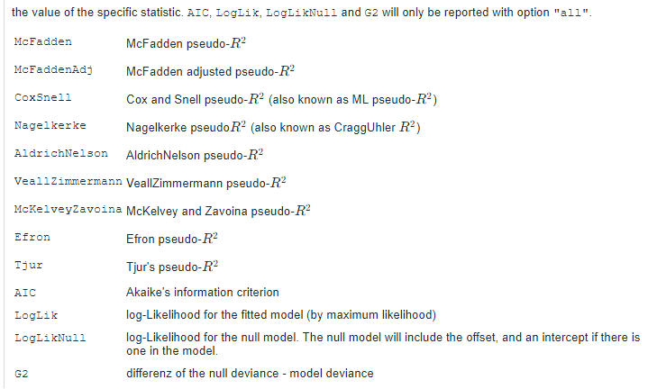
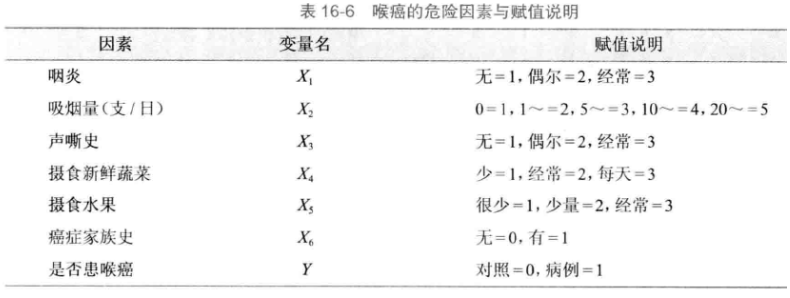

data16_1 <- foreign::read.spss("datasets/例16-01.sav",
to.data.frame = T,
use.value.labels = F,
reencode = "utf-8")
str(data16_1)
## 'data.frame': 8 obs. of 4 variables:
## $ x1 : num 0 0 0 0 1 1 1 1
## $ x2 : num 0 0 1 1 0 0 1 1
## $ case_ctr: num 1 0 1 0 1 0 1 0
## ..- attr(*, "value.labels")= Named chr [1:2] "1" "0"
## .. ..- attr(*, "names")= chr [1:2] "case" "control"
## $ freq : num 63 136 63 107 44 57 265 151
## - attr(*, "variable.labels")= Named chr(0)
## ..- attr(*, "names")= chr(0)21 逻辑回归
逻辑回归（logistic regression）属于概率型非线性回归，它是研究二分类（可扩展到多分类）观察结果与一些影响因素之间关系的一种多变量分析方法。
在流行病学研究中，经常需要分析疾病与各危险因素之间的定量关系，如食管癌的发生与吸烟、饮酒、不良饮食习惯等危险因素的关系，为了正确说明这种关系，需要排除一些混杂因素的影响。传统上常使用Mantel-Haenszel分层分析方法，但这一方法适用于样本含量大、分析因素较少的情况。如果用线性回归分析，由于应变量是二值变量（通常取值为1或0），不满足应用条件，尤其当各因素都处于低水平或高水平时，预测值可能超出0~1范围，出现不合理的现象。用logistic回归分析则可以较好地解决上述问题。
21.1 二分类逻辑回归
因变量是二分类变量时，可以使用二分类逻辑回归（binomial logistic regression），自变量可以是数值变量、无序多分类变量、有序多分类变量。
本次数据使用孙振球版《医学统计学》第4版例16-1的数据，吸烟、饮酒与食管癌的关系。
这是一个频率表的数据格式，我们先把它变成原始数据格式：
data16_1_long <- DescTools::Untable(data16_1, freq = "freq")
str(data16_1_long)
## 'data.frame': 886 obs. of 3 variables:
## $ x1 : num 0 0 0 0 0 0 0 0 0 0 ...
## $ x2 : num 0 0 0 0 0 0 0 0 0 0 ...
## $ case_ctr: num 1 1 1 1 1 1 1 1 1 1 ...这样数据就变成了3列，前2列是自变量，第3列是因变量。这里的两个自变量都是二分类变量，x1是吸烟情况，1表示吸烟，0表示不吸烟，x2是饮酒情况，1表示饮酒，0表示不饮酒。case_ctr是因变量，1表示病例组，0表示对照组。
在标准的做法中，我们需要把分类变量变成因子型：
data16_1_long$x1 <- factor(data16_1_long$x1)
data16_1_long$x2 <- factor(data16_1_long$x2)
str(data16_1_long)
## 'data.frame': 886 obs. of 3 variables:
## $ x1 : Factor w/ 2 levels "0","1": 1 1 1 1 1 1 1 1 1 1 ...
## $ x2 : Factor w/ 2 levels "0","1": 1 1 1 1 1 1 1 1 1 1 ...
## $ case_ctr: num 1 1 1 1 1 1 1 1 1 1 ...建立回归方程：
f1 <- glm(case_ctr ~ x1 + x2, data = data16_1_long,family = binomial())
summary(f1)
##
## Call:
## glm(formula = case_ctr ~ x1 + x2, family = binomial(), data = data16_1_long)
##
## Coefficients:
## Estimate Std. Error z value Pr(>|z|)
## (Intercept) -0.9099 0.1358 -6.699 2.11e-11 ***
## x11 0.8856 0.1500 5.904 3.54e-09 ***
## x21 0.5261 0.1572 3.348 0.000815 ***
## ---
## Signif. codes: 0 '***' 0.001 '**' 0.01 '*' 0.05 '.' 0.1 ' ' 1
##
## (Dispersion parameter for binomial family taken to be 1)
##
## Null deviance: 1228.0 on 885 degrees of freedom
## Residual deviance: 1159.4 on 883 degrees of freedom
## AIC: 1165.4
##
## Number of Fisher Scoring iterations: 421.1.1 结果解读
首先看Coefficients部分，这部分给出了各个变量的系数、标准误、z值、P值。其中Estimate是回归系数和截距，Std. Error表示回归系数的标准误，z value是统计量值（z的平方就是Wald值），Pr(>|z|)是P值。
因子型变量在进行回归分析时会默认进行哑变量设置，以其中一个作为参考，其他的类别都和参考类别进行比较，因此结果中会出现x11/x21这种写法，表示的是：x1这个变量以类别0为参考，所以结果中出现的是类别1的回归系数等信息，x21也是以类别0为参考。
Null deviance:无效偏差（零偏差）。
Residual deviance:残差偏差，无效偏差和残差偏差之间的差异越大越好，用来评价模型与实际数据的吻合情况。
AIC：赤池信息准则，表示模型拟合程度的好坏，AIC越低表示模型拟合越好。
最后还有一个Fisher Scoring的迭代次数，这个和最大似然函数的计算有关。
我们可以通过函数的方式分别获取模型信息。
# β值，也就是回归系数，两种方法都可以
coefficients(f1)
## (Intercept) x11 x21
## -0.9099467 0.8855837 0.5261234
#coef(f1)
# β值的95%可信区间
confint(f1)
## 2.5 % 97.5 %
## (Intercept) -1.1803612 -0.6472764
## x11 0.5928032 1.1811155
## x21 0.2184611 0.8350294
# OR值，比值比（odds ratio）
exp(coef(f1))
## (Intercept) x11 x21
## 0.4025457 2.4243991 1.6923589
# OR值的95%的可信区间
exp(confint(f1))
## 2.5 % 97.5 %
## (Intercept) 0.3071678 0.5234695
## x11 1.8090525 3.2580064
## x21 1.2441606 2.3048818x11的OR值=2.42，表示吸烟的人患食管癌的风险是不吸烟的人的2.42倍。
其他常用的结果计算方法：
# Wald值
summary(f1)$coefficients[,3]^2
## (Intercept) x11 x21
## 44.86994 34.86249 11.20688
# P值
summary(f1)$coefficients[,4]
## (Intercept) x11 x21
## 2.105657e-11 3.538325e-09 8.149457e-04
# 预测值，太长了不展示
#fitted(f1) # 或者 predict(f,type = "response")
# 偏差
deviance(f1)
## [1] 1159.422
# 残差自由度
df.residual(f1)
## [1] 883这里需要说明一下fitted(f1)，也就是predict(f1,type="response")得到的结果是预测概率，范围是0-1之间的。
对于逻辑回归来说，如果不使用type函数，默认是type="link"，返回的是logit(P)的值。
# 默认返回logit(P)的值
a <- predict(f1)
head(a)
# 返回概率
# 等价于：fitted(f1)
b <- predict(f1, type = "response")
head(b)21.1.2 假设检验
介绍两种方法：Wald卡方检验法和似然比检验法。
得到回归方程后，还需要对回归系数进行假设检验，结果中的Coefficients部分直接给出了各个自变量的z值和P值。
Wald值和z值的关系如下：
Wald是一个卡方值，等于β除以它的标准误（这里是Std.Error）然后取平方（也就是z值的平方），因此不可能是负数。Wald用于对β值进行检验，考察β值是否等于0。若β值等于0，其对应的OR值，也就是Exp(β)为1，表明两组没有显著差异。Wald值越大，β值越不可能等于0。
Wald值的计算方法如下：
# Wald值
summary(f1)$coefficients[,3]^2
## (Intercept) x11 x21
## 44.86994 34.86249 11.20688进行似然比检验可以分别建立只有1个变量的模型，然后对单自变量模型和原模型（包含两个自变量）进行似然比检验即可：
# 包含两个自变量的模型，简称全模型
f1 <- glm(case_ctr ~ x1 + x2, data = data16_1_long,family = binomial())
# 分别构建只有1个自变量的模型
f_x1 <- glm(case_ctr ~ x1, data = data16_1_long, family = binomial())#只有x1
f_x2 <- glm(case_ctr ~ x2, data = data16_1_long, family = binomial())#只有x2
# f_x1和全模型进行似然比检验
anova(f_x1,f1,test="Chisq")
## Analysis of Deviance Table
##
## Model 1: case_ctr ~ x1
## Model 2: case_ctr ~ x1 + x2
## Resid. Df Resid. Dev Df Deviance Pr(>Chi)
## 1 884 1170.7
## 2 883 1159.4 1 11.23 0.0008047 ***
## ---
## Signif. codes: 0 '***' 0.001 '**' 0.01 '*' 0.05 '.' 0.1 ' ' 1结果中的Deviance就是似然比统计量G=11.23，P值小于0.05，说明控制了吸烟因素的影响之后，食管癌与饮酒有显著关系。
同理可对x2变量进行检验：
anova(f_x2,f1,test = "Chisq")
## Analysis of Deviance Table
##
## Model 1: case_ctr ~ x2
## Model 2: case_ctr ~ x1 + x2
## Resid. Df Resid. Dev Df Deviance Pr(>Chi)
## 1 884 1194.9
## 2 883 1159.4 1 35.45 2.616e-09 ***
## ---
## Signif. codes: 0 '***' 0.001 '**' 0.01 '*' 0.05 '.' 0.1 ' ' 1似然比统计量G=35.45，P<0.05，说明控制了饮酒因素的影响之后，食管癌与吸烟有显著关系。
似然比也可以手动计算，以f_x1为例演示：
# 提取对数似然值
logLik_f_x1 <- logLik(f_x1)
logLik_full <- logLik(f1)
# 计算统计量
LR_stat <- 2 * (logLik_full - logLik_f_x1)
LR_stat
## 'log Lik.' 11.23043 (df=3)21.1.3 模型评价
这里介绍一下拟合优度检验，即Hosmer-Lemeshow检验，使用ResourceSelection包实现：
library(ResourceSelection)
hoslem.test(f1$y, fitted(f1))
##
## Hosmer and Lemeshow goodness of fit (GOF) test
##
## data: f1$y, fitted(f1)
## X-squared = 1.7262, df = 1, p-value = 0.1889P>0.05，说明模型拟合良好。
也可以计算伪R2等指标：
# 伪R^2
DescTools::PseudoR2(f1, which = c("McFadden", "CoxSnell", "Nagelkerke"))
## McFadden CoxSnell Nagelkerke
## 0.05582041 0.07444833 0.09927524每一项的意义可以参考下面这张图：

21.1.4 变量筛选
使用孙振球版《医学统计学》第4版例16-2的数据演示。
为了探讨冠心病发生的危险因素，对26例冠心病患者和28例对照者进行病例-对照研究，试用逻辑回归筛选危险因素。
# 读取数据
data16_2 <- foreign::read.spss("datasets/例16-02.sav",
to.data.frame = T,
use.value.labels = F,
reencode = "utf-8")
str(data16_2)
## 'data.frame': 54 obs. of 11 variables:
## $ .... : num 1 2 3 4 5 6 7 8 9 10 ...
## $ x1 : num 3 2 2 2 3 3 2 3 2 1 ...
## $ x2 : num 1 0 1 0 0 0 0 0 0 0 ...
## $ x3 : num 0 1 0 0 0 1 1 1 0 0 ...
## $ x4 : num 1 1 1 1 1 1 0 1 0 1 ...
## $ x5 : num 0 0 0 0 0 0 0 1 0 0 ...
## $ x6 : num 0 0 0 0 1 0 0 0 0 0 ...
## $ x7 : num 1 1 1 1 1 2 1 1 1 1 ...
## $ x8 : num 1 0 0 0 1 1 0 0 1 0 ...
## $ y : num 0 0 0 0 0 0 0 0 0 0 ...
## $ PGR_1: num 1 0 0 0 1 1 0 0 0 0 ...
## - attr(*, "variable.labels")= Named chr [1:11] "" "" "" "" ...
## ..- attr(*, "names")= chr [1:11] "...." "x1" "x2" "x3" ...数据一共11列，第1列是编号，第2-9列是自变量，第10列是因变量。
具体说明：
- x1：年龄，小于45岁是1,45-55是2,55-65是3,65以上是4；
- x2：高血压病史，1代表有，0代表无；
- x3：高血压家族史，1代表有，0代表无；
- x4：吸烟，1代表吸烟，0代表不吸烟；
- x5：高血脂病史，1代表有，0代表无；
- x6：动物脂肪摄入，0表示低，1表示高
- x7：BMI，小于24是1,24-26是2，大于26是3；
- x8：A型性格，1代表是，0代表否；
- y：是否是冠心病，1代表是，0代表否
这里的x1~y虽然是数值型，但并不是真的代表数字大小，只是为了方便标识进行了转换，在进行logistic回归之前，我们要把数值型变量变成无序分类或有序分类变量，在R语言中可以通过factor()函数变成因子型实现。
# 变成因子型，因变量使用0和1也可以，例16-1中就没变因子
data16_2[,c(2:10)] <- lapply(data16_2[,c(2:10)], factor)
str(data16_2)
## 'data.frame': 54 obs. of 11 variables:
## $ .... : num 1 2 3 4 5 6 7 8 9 10 ...
## $ x1 : Factor w/ 4 levels "1","2","3","4": 3 2 2 2 3 3 2 3 2 1 ...
## $ x2 : Factor w/ 2 levels "0","1": 2 1 2 1 1 1 1 1 1 1 ...
## $ x3 : Factor w/ 2 levels "0","1": 1 2 1 1 1 2 2 2 1 1 ...
## $ x4 : Factor w/ 2 levels "0","1": 2 2 2 2 2 2 1 2 1 2 ...
## $ x5 : Factor w/ 2 levels "0","1": 1 1 1 1 1 1 1 2 1 1 ...
## $ x6 : Factor w/ 2 levels "0","1": 1 1 1 1 2 1 1 1 1 1 ...
## $ x7 : Factor w/ 3 levels "1","2","3": 1 1 1 1 1 2 1 1 1 1 ...
## $ x8 : Factor w/ 2 levels "0","1": 2 1 1 1 2 2 1 1 2 1 ...
## $ y : Factor w/ 2 levels "0","1": 1 1 1 1 1 1 1 1 1 1 ...
## $ PGR_1: num 1 0 0 0 1 1 0 0 0 0 ...
## - attr(*, "variable.labels")= Named chr [1:11] "" "" "" "" ...
## ..- attr(*, "names")= chr [1:11] "...." "x1" "x2" "x3" ...分类自变量在进行逻辑回归时，会自动进行哑变量设置，即给定一个参考，让其他所有类别都和参考类别相比，比如这里，我们把x1变成因子型后，R语言在进行logistic回归时，会默认选择类别1为参考。
接下来进行二分类逻辑回归，在R语言中，默认是以因子的第一个为参考的，不仅是自变量，因变量也是如此！ 和SPSS的默认方式不太一样。
# 建立包含所有自变量的全模型
f2 <- glm(y ~ x1 + x2 + x3 + x4 + x5 + x6 + x7 + x8,
data = data16_2,
family = binomial())
summary(f2)
##
## Call:
## glm(formula = y ~ x1 + x2 + x3 + x4 + x5 + x6 + x7 + x8, family = binomial(),
## data = data16_2)
##
## Coefficients:
## Estimate Std. Error z value Pr(>|z|)
## (Intercept) -5.46026 2.07370 -2.633 0.00846 **
## x12 0.85285 1.54399 0.552 0.58070
## x13 0.47754 1.59320 0.300 0.76438
## x14 3.44227 2.10985 1.632 0.10278
## x21 1.14905 0.93176 1.233 0.21750
## x31 1.66039 1.16857 1.421 0.15535
## x41 0.85994 1.32437 0.649 0.51613
## x51 0.73600 0.97088 0.758 0.44840
## x61 3.92067 1.57004 2.497 0.01252 *
## x72 -0.03467 1.13363 -0.031 0.97560
## x73 -0.38230 1.61710 -0.236 0.81311
## x81 2.46322 1.10484 2.229 0.02578 *
## ---
## Signif. codes: 0 '***' 0.001 '**' 0.01 '*' 0.05 '.' 0.1 ' ' 1
##
## (Dispersion parameter for binomial family taken to be 1)
##
## Null deviance: 74.786 on 53 degrees of freedom
## Residual deviance: 40.028 on 42 degrees of freedom
## AIC: 64.028
##
## Number of Fisher Scoring iterations: 6这里x12的OR值约是2.35（exp(0.85285)），代表：45~55岁的人群患冠心病的风险是小于45岁人群的2.35倍，但是这个结果并没有统计学意义！
变量筛选可以根据AIC、BIC、wald卡方值、似然比统计量G等进行，我们这里借助MASS包，依据AIC进行变量筛选。关于该过程的详细步骤以及各种统计量的解释，请参考变量选择之最优子集法和变量选择之逐步回归
逐步回归的logistic回归，可以使用step()函数：
library(MASS)
stepAIC(f2, direction = "both", trace = F)
##
## Call: glm(formula = y ~ x2 + x3 + x6 + x8, family = binomial(), data = data16_2)
##
## Coefficients:
## (Intercept) x21 x31 x61 x81
## -3.031 1.471 1.225 3.612 1.864
##
## Degrees of Freedom: 53 Total (i.e. Null); 49 Residual
## Null Deviance: 74.79
## Residual Deviance: 47.54 AIC: 57.54按照逐步法、使用AIC作为指标，最终纳入的自变量是x2,x3,x6,x8。
21.2 条件逻辑回归
条件逻辑回归（conditional logistic regression）是针对配对数据资料分析的一种方法。在一些病例-对照研究中，把病例和对照按照年龄、性别等进行配对，形成多个匹配组，各匹配组的病例数和对照数是任意的，并不是1个对1个，常用的是每组中有一个病例和多个对照，即1：M配对研究（一般M≤3）。
使用孙振球《医学统计学》第4版例16-3的数据。某北方城市研究喉癌发病的危险因素，用1:2配对研究，现选取了6个可能的危险因素并记录了25对数据，试做条件logistic回归。

data16_3 <- foreign::read.spss("datasets/例16-03.sav",to.data.frame = T)
head(data16_3)
## i y x1 x2 x3 x4 x5 x6
## 1 1 1 3 5 1 1 1 0
## 2 1 0 1 1 1 3 3 0
## 3 1 0 1 1 1 3 3 0
## 4 2 1 1 3 1 1 3 0
## 5 2 0 1 1 1 3 2 0
## 6 2 0 1 2 1 3 2 0
str(data16_3)
## 'data.frame': 75 obs. of 8 variables:
## $ i : num 1 1 1 2 2 2 3 3 3 4 ...
## $ y : num 1 0 0 1 0 0 1 0 0 1 ...
## $ x1: num 3 1 1 1 1 1 1 1 1 1 ...
## $ x2: num 5 1 1 3 1 2 4 5 4 4 ...
## $ x3: num 1 1 1 1 1 1 1 1 1 1 ...
## $ x4: num 1 3 3 1 3 3 3 3 3 2 ...
## $ x5: num 1 3 3 3 2 2 2 2 2 1 ...
## $ x6: num 0 0 0 0 0 0 0 0 0 1 ...i是配对的组号，不需要变成因子型。以前3航为例解释下这个数据的结构，前3行都是第1组的，其中第1行是病例（y=1），第2和3行是对照（y=0）。
使用survival::clogit进行条件逻辑回归，先建立全模型：
library(survival)
full_model <- clogit(y ~ x1+x2+x3+x4+x5+x6+strata(i),
data = data16_3, method = "breslow")
#summary(full_model)21.2.1 变量筛选
然后使用MASS包进行逐步回归法筛选变量，依据的统计量是AIC（而不是书中的wald卡方值）：
library(MASS)
stepAIC(full_model,direction = "both",trace = F)
## Call:
## coxph(formula = Surv(rep(1, 75L), y) ~ x1 + x2 + x3 + x4 + x6 +
## strata(i), data = data16_3, method = "breslow")
##
## coef exp(coef) se(coef) z p
## x1 2.72788 15.30037 2.86273 0.953 0.3406
## x2 1.63294 5.11889 0.64090 2.548 0.0108
## x3 2.19644 8.99295 1.15872 1.896 0.0580
## x4 -4.09625 0.01663 1.94949 -2.101 0.0356
## x6 3.78580 44.07080 2.09677 1.806 0.0710
##
## Likelihood ratio test=42.03 on 5 df, p=5.811e-08
## n= 75, number of events= 25这一步得到的变量是x1,x2,x3,x4,x6，和书里不一致，因为依据的统计量不一样。目前并没有现成的R包可以依据wald卡方进行逐步回归法筛选变量，除非自己写函数。
按照书中最终留下x2,x3,x4,x6这4个变量，然后再使用这4个变量建立条件逻辑回归，即可得到与表16-8一致的结果：
fit <- clogit(y ~ x2+x3+x4+x6+strata(i),
data = data16_3, method = "breslow")
summary(fit)
## Call:
## coxph(formula = Surv(rep(1, 75L), y) ~ x2 + x3 + x4 + x6 + strata(i),
## data = data16_3, method = "breslow")
##
## n= 75, number of events= 25
##
## coef exp(coef) se(coef) z Pr(>|z|)
## x2 1.48691 4.42343 0.55065 2.700 0.00693 **
## x3 1.91665 6.79812 0.94435 2.030 0.04240 *
## x4 -3.76405 0.02319 1.82510 -2.062 0.03917 *
## x6 3.63211 37.79254 1.86572 1.947 0.05156 .
## ---
## Signif. codes: 0 '***' 0.001 '**' 0.01 '*' 0.05 '.' 0.1 ' ' 1
##
## exp(coef) exp(-coef) lower .95 upper .95
## x2 4.42343 0.22607 1.5032983 13.0158
## x3 6.79812 0.14710 1.0679561 43.2737
## x4 0.02319 43.12280 0.0006483 0.8295
## x6 37.79254 0.02646 0.9756664 1463.8982
##
## Concordance= 0.9 (se = 0.068 )
## Likelihood ratio test= 38.82 on 4 df, p=8e-08
## Wald test = 8.96 on 4 df, p=0.06
## Score (logrank) test = 28.4 on 4 df, p=1e-05结果非常齐全，β值，OR值，z值，P值等信息都有了。
21.2.2 结果解读
结果解读参考二分类逻辑回归结果解读。
21.2.3 假设检验
上述结果的最后3行已经给出了模型整体的假设检验结果，依次是：
- Likelihood Ratio Test(似然比检验)：统计量=38.82，P值远小于0.05，说明模型整体非常显著。
- Wald Test：统计量=8.96，P=0.06，根据该结果，模型整体似乎没有显著优于空模型，这个结果可能不准，注意变量x6，系数是3.63，OR值高达37.79，且置信区间极宽（0.97到1463.89），说明数据可能存在稀疏性或分离现象，导致标准误膨胀，从而使Wald检验失效。
- Score (Logrank) Test(计分检验)：统计量=28.4，P<0.05，也说明模型整体非常显著。
似然比检验也可以自己做，结果是一样的：
# 建立空模型
model_0 <- clogit(y ~ 1+strata(i),
data = data16_3, method = "breslow")
# 进行似然比检验
anova(model_0,fit,test = "chisq")
## Analysis of Deviance Table
## Cox model: response is Surv(rep(1, 75L), y)
## Model 1: ~ 1 + strata(i)
## Model 2: ~ x2 + x3 + x4 + x6 + strata(i)
## loglik Chisq Df Pr(>|Chi|)
## 1 -27.465
## 2 -8.056 38.819 4 7.594e-08 ***
## ---
## Signif. codes: 0 '***' 0.001 '**' 0.01 '*' 0.05 '.' 0.1 ' ' 1P<0.05，说明原模型有意义。
条件逻辑回归不能直接使用普通的Hosmer-Lemeshow检验、伪R2或传统的混淆矩阵来评价模型，因为这些指标通常依赖于截距项或整体概率预测，而条件逻辑回归不估计截距。
因此条件逻辑回归不能用以上方法评价拟合优度，如果非要评价模型预测准确性，可以计算Harrell’s C-index(一致性指数)，因为条件逻辑回归等价于分层Cox模型。结果中的Concordance=0.9就是一致性指数。
21.3 有序逻辑回归
有序逻辑回归（ordinal logistic regression）适用于因变量为等级资料的数据。
使用孙振球《医学统计学》第4版例16-4的数据。
随机选取84例患者做临床试验，探讨性别和治疗方法对该病的影响。变量赋值为：性别（X1，男=0，女=1），治疗方法（X2，传统疗法=0，新型疗法=1），疗效（Y，无效=1，有效=2，痊愈=3）。
data16_4 <- read.csv("datasets/例16-04.csv",header = T)
head(data16_4)
## X1 X2 Y
## 1 0 0 1
## 2 0 0 1
## 3 0 0 1
## 4 0 0 1
## 5 0 0 1
## 6 0 0 1
str(data16_4)
## 'data.frame': 84 obs. of 3 variables:
## $ X1: int 0 0 0 0 0 0 0 0 0 0 ...
## $ X2: int 0 0 0 0 0 0 0 0 0 0 ...
## $ Y : int 1 1 1 1 1 1 1 1 1 1 ...为与流行病学上对优势比的解释保持一致（当某自变量X的OR值大于1时将其视作危险因素，小于1时将其视作保护因素），对有序逻辑回归因变量Y赋值时应将专业上最不利的等级赋予最小值，最有利的等级赋予最大值。如Y为疾病严重程度，则应按从“严重”到“轻”的顺序从低到高赋1，2，3。
# 因变量变为有序因子，注意赋值
data16_4$Y <- factor(data16_4$Y, levels = c(1,2,3),
labels = c("无效","有效","痊愈"),
ordered = T)
# 自变量变为无序因子
data16_4$X1 <- factor(data16_4$X1,levels = c(0,1), # 以男为参考
labels = c("男","女"))
data16_4$X2 <- factor(data16_4$X2,levels = c(0,1), # 以传统疗法为参考
labels = c("传统疗法","新型疗法"))
str(data16_4)
## 'data.frame': 84 obs. of 3 variables:
## $ X1: Factor w/ 2 levels "男","女": 1 1 1 1 1 1 1 1 1 1 ...
## $ X2: Factor w/ 2 levels "传统疗法","新型疗法": 1 1 1 1 1 1 1 1 1 1 ...
## $ Y : Ord.factor w/ 3 levels "无效"<"有效"<..: 1 1 1 1 1 1 1 1 1 1 ...使用MASS::polr拟合有序逻辑回归：
library(MASS)
fit <- polr(Y ~ X1 + X2, data = data16_4,Hess = TRUE,method = "logistic")
summary(fit)
## Call:
## polr(formula = Y ~ X1 + X2, data = data16_4, Hess = TRUE, method = "logistic")
##
## Coefficients:
## Value Std. Error t value
## X1女 1.319 0.5381 2.451
## X2新型疗法 1.797 0.4718 3.809
##
## Intercepts:
## Value Std. Error t value
## 无效|有效 1.8128 0.5654 3.2061
## 有效|痊愈 2.6672 0.6065 4.3979
##
## Residual Deviance: 150.0294
## AIC: 158.029421.3.1 结果解读
结果x1和x2的系数以及常数项的值与SPSS结果一致。不过这里给出的是t值，不是wald值，在样本量大时两个值基本一致。
R语言的polr函数的计算逻辑如下公式所示，它计算的是：落入低等级（坏结果）的累积概率。也就是下面这个公式中等号左侧的部分，如果回归系数β是负值，那么这个概率就会增加，如果β是正的，那么这个概率就减少。
\[ \operatorname{logit}P\left( {Y \leq k \mid x}\right) = {\zeta }_{k} - \beta*X \]
本例X1女的系数是1.319，系数是正的，说明相比于参考组（男性），女性落在“疗效较差”等级（无效或有效）的对数几率降低了，优势比OR=exp(1.319)=3.73968，说明女性患者获得比男性更高疗效等级（例如从“无效”跳到“有效”，或从“有效”跳到“痊愈”）的累积优势比是男性的3.74倍。同理，新型疗法的疗效优于传统疗法。
Intercepts中，无效|有效的值是1.8128，这是参考组（男性+传统疗法）处于“无效”等级的对数几率。概率计算方法如下：
\[ P\left( {Y \leq \text{ 无效 }}\right) = \frac{{e}^{1.8128}}{1 + {e}^{1.8128}} \approx \frac{6.127}{7.127} \approx {0.860} \]
说明对于使用传统疗法的男性患者，预测其疗效为“无效”的概率高达86.0%。
有效|痊愈的值是2.6672，这是参考组（男性+传统疗法）处于“无效或有效”等级的累积对数几率。计算可得：对于使用传统疗法的男性患者，预测其未能痊愈（即无效或有效）的概率约为93.5%。
\[ P\left( {Y \leq \text{ 有效 }}\right) = \frac{{e}^{2.6672}}{1 + {e}^{2.6672}} \approx \frac{14.40}{15.40} \approx {0.935} \]
但是结果中没有给出P值，手动计算P值：
p <- pnorm(abs(coef(summary(fit))[, "t value"]),lower.tail = F)*2
p
## X1女 X2新型疗法 无效|有效 有效|痊愈
## 1.425572e-02 1.392807e-04 1.345300e-03 1.092866e-05各个变量的系数以及OR值、可信区间等，与二分类逻辑回归计算方式一致：
# β值，也就是回归系数，两种方法都可以
coefficients(fit)
## X1女 X2新型疗法
## 1.318755 1.797300
#coef(fit)
# β值的95%可信区间
confint(fit)
## 2.5 % 97.5 %
## X1女 0.3022840 2.428170
## X2新型疗法 0.8995976 2.758261
# OR值，比值比（odds ratio）
exp(coef(fit))
## X1女 X2新型疗法
## 3.738765 6.033338
# OR值的95%的可信区间
exp(confint(fit))
## 2.5 % 97.5 %
## X1女 1.352945 11.33812
## X2新型疗法 2.458614 15.7724021.3.2 假设检验
在拟合有序逻辑回归（因变量Y包括g个类别）时，需要对所拟合的g-1个方程对应的累计概率曲线的平行性进行检验，即检验各自变量在不同累计概率模型中的回归系数是否相同。当平行性假设未满足时，说明资料不适合有序logistic回归模型，应该采用多分类logistic回归模型。
Brant-Wald检验分别对每一个自变量进行Wald检验，判断该变量在不同切点（Cut-points）上的回归系数是否显著不同。
# 平行线检验(Brant-Wald test)
brant::brant(fit)
## --------------------------------------------
## Test for X2 df probability
## --------------------------------------------
## Omnibus 1.83 2 0.4
## X1女 1.59 1 0.21
## X2新型疗法 0.01 1 0.94
## --------------------------------------------
##
## H0: Parallel Regression Assumption holdsOmnibus(整体检验)是检验所有自变量是否同时满足平行线假设。然后下面是检验每一个自变量是否满足平行线假设。
P值>0.05，平行线检验通过，可以使用有序逻辑回归。
模型整体的显著性检验，可以借助似然比检验：
# 先构建一个只有截距的模型
fit0 <- polr(Y ~ 1, data = data16_4,Hess = TRUE,method = "logistic")
# 两个模型比较，似然比检验
anova(fit0, fit)
## Likelihood ratio tests of ordinal regression models
##
## Response: Y
## Model Resid. df Resid. Dev Test Df LR stat. Pr(Chi)
## 1 1 82 169.9159
## 2 X1 + X2 80 150.0294 1 vs 2 2 19.8865 4.80508e-05P值<0.01，模型是有意义的。
计算伪R2，也就是书中的广义决定系数，可用于评价模型的拟合优度：
# 除了伪R2，还给出了更多统计量
DescTools::PseudoR2(fit, which = "all")
## McFadden CoxSnell Nagelkerke AldrichNelson VeallZimmermann
## 0.1170373 0.2108068 0.2429443 NA NA
## Efron McKelveyZavoina Tjur AIC BIC
## NA NA NA 158.0294131 167.7526803
## logLik logLik0 G2
## -75.0147065 -84.9579583 19.8865036每一项的意义可以参考下面这张图：
对于有序逻辑回归，还可以使用LipsitzTest评价模型的拟合优度：
library(generalhoslem)
lipsitz.test(fit)
##
## Lipsitz goodness of fit test for ordinal response models
##
## data: formula: Y ~ X1 + X2
## LR statistic = 92.526, df = 9, p-value = 5.551e-16p<0.05，说明模型拟合欠佳，结合伪R2也很小，说明这个模型拟合确实欠佳。
21.3.3 结果预测
获取模型预测的类别：
pred <- predict(fit, data16_4, type = "class")
head(pred)
## [1] 无效 无效 无效 无效 无效 无效
## Levels: 无效 有效 痊愈获取模型预测的概率：
prob <- predict(fit, data16_4, type = "probs") # 或者使用 fitted(fit)
head(prob)
## 无效 有效 痊愈
## 1 0.8597003 0.07536263 0.06493706
## 2 0.8597003 0.07536263 0.06493706
## 3 0.8597003 0.07536263 0.06493706
## 4 0.8597003 0.07536263 0.06493706
## 5 0.8597003 0.07536263 0.06493706
## 6 0.8597003 0.07536263 0.0649370621.3.4 oridnal
除了MASS之外，还可以用ordinal::clm做有序逻辑回归，它的输出结果中给的是z值而不是t值，但是这个模型不能直接提供给brant函数做平行检验。
# 简单演示下用法
library(ordinal)
model <- clm(Y ~ X1 + X2, data = data16_4, link = "logit")
summary(model)
## formula: Y ~ X1 + X2
## data: data16_4
##
## link threshold nobs logLik AIC niter max.grad cond.H
## logit flexible 84 -75.01 158.03 5(0) 2.68e-07 4.5e+01
##
## Coefficients:
## Estimate Std. Error z value Pr(>|z|)
## X1女 1.3188 0.5381 2.451 0.014256 *
## X2新型疗法 1.7973 0.4718 3.809 0.000139 ***
## ---
## Signif. codes: 0 '***' 0.001 '**' 0.01 '*' 0.05 '.' 0.1 ' ' 1
##
## Threshold coefficients:
## Estimate Std. Error z value
## 无效|有效 1.8128 0.5654 3.206
## 有效|痊愈 2.6672 0.6065 4.398nominal_test是一个针对比例优势假设的拟合优度检验，它通过检验“非平行模型是否显著优于平行模型”来间接判断平行线假设是否成立。
nominal_test(model)
## Tests of nominal effects
##
## formula: Y ~ X1 + X2
## Df logLik AIC LRT Pr(>Chi)
## <none> -75.015 158.03
## X1 1 -74.297 158.59 1.43620 0.2308
## X2 1 -74.936 159.87 0.15773 0.6913两个变量的P值都是大于0.05的，说明两个变量都没有违背比例优势假设，即满足平行线假设。
21.4 无序多分类逻辑回归
因变量是无序多分类资料（>2）时，可使用多分类逻辑回归（multinomial logistic regression）。
使用孙振球《医学统计学》第4版例16-5的数据。
某研究人员欲了解不同社区和性别之间居民获取健康知识的途径是否相同，对2个社区的314名成人进行了调查，其中X1是社区，社区1用0表示，社区2用1表示；X2是性别，0是男，1是女，Y是获取健康知识途径，1是传统大众传媒，2是网络，3是社区宣传。
data16_5 <- read.csv("datasets/例16-05.csv",header = T)
head(data16_5)
## X1 X2 Y
## 1 0 0 1
## 2 0 0 1
## 3 0 0 1
## 4 0 0 1
## 5 0 0 1
## 6 0 0 1首先变为因子型，无需多分类的逻辑回归需要对因变量设置参考，我们这里直接用factor()函数变为因子，这样在进行无序多分类的逻辑回归时默认是以第一个为参考。
# 自变量变为因子型，规定好参考组
data16_5$X1 <- factor(data16_5$X1,levels = c(0,1),
labels = c("社区1","社区2"))
data16_5$X2 <- factor(data16_5$X2,levels = c(0,1),
labels = c("男","女"))
# 因变量设置参考，这里选择第1个（传统大众传媒）为参考
data16_5$Y <- factor(data16_5$Y,levels = c(1,2,3),
labels = c("传统大众传媒","网络","社区宣传"))
str(data16_5)
## 'data.frame': 314 obs. of 3 variables:
## $ X1: Factor w/ 2 levels "社区1","社区2": 1 1 1 1 1 1 1 1 1 1 ...
## $ X2: Factor w/ 2 levels "男","女": 1 1 1 1 1 1 1 1 1 1 ...
## $ Y : Factor w/ 3 levels "传统大众传媒",..: 1 1 1 1 1 1 1 1 1 1 ...使用nnet::multinom进行无序多分类的logistic回归：
library(nnet)
fit <- multinom(Y ~ X1 + X2, data = data16_5, model = T)
## # weights: 12 (6 variable)
## initial value 344.964259
## iter 10 value 316.575399
## iter 10 value 316.575399
## iter 10 value 316.575399
## final value 316.575399
## converged
summary(fit)
## Call:
## multinom(formula = Y ~ X1 + X2, data = data16_5, model = T)
##
## Coefficients:
## (Intercept) X1社区2 X2女
## 网络 0.5484998 -1.3743147 0.4321069
## 社区宣传 0.3940422 -0.9933526 1.2266459
##
## Std. Errors:
## (Intercept) X1社区2 X2女
## 网络 0.2583299 0.3201514 0.3265384
## 社区宣传 0.2574175 0.2952083 0.2991714
##
## Residual Deviance: 633.1508
## AIC: 645.1508自变量的Z值（wald Z, Z-score）和P值需要手动计算:
z_stats <- summary(fit)$coefficients/summary(fit)$standard.errors
p_values <- (1 - pnorm(abs(z_stats)))*2
p_values
## (Intercept) X1社区2 X2女
## 网络 0.03373263 1.765117e-05 1.857371e-01
## 社区宣传 0.12583082 7.656564e-04 4.128929e-05有的P值小小于0.05的，综合来看：性别对“社区宣传vs传统媒体”的选择有显著影响（女性显著更多）；性别对“网络vs传统媒体”的选择在0.05水平下统计上不显著。
P值和Z值也可以调包计算：
res <- broom::tidy(fit)
res
## # A tibble: 6 × 6
## y.level term estimate std.error statistic p.value
## <chr> <chr> <dbl> <dbl> <dbl> <dbl>
## 1 网络 (Intercept) 0.548 0.258 2.12 0.0337
## 2 网络 X1社区2 -1.37 0.320 -4.29 0.0000177
## 3 网络 X2女 0.432 0.327 1.32 0.186
## 4 社区宣传 (Intercept) 0.394 0.257 1.53 0.126
## 5 社区宣传 X1社区2 -0.993 0.295 -3.36 0.000766
## 6 社区宣传 X2女 1.23 0.299 4.10 0.0000413OR值及其95%的可信区间也没有给出来，需要手动计算OR值和可信区间：
# 计算OR值
OR <- exp(coef(fit))
OR
## (Intercept) X1社区2 X2女
## 网络 1.730655 0.2530129 1.540500
## 社区宣传 1.482963 0.3703330 3.409774
# 计算OR值的95%的可信区间
OR.confi <- exp(confint(fit))
OR.confi
## , , 网络
##
## 2.5 % 97.5 %
## (Intercept) 1.0430848 2.8714501
## X1社区2 0.1350919 0.4738666
## X2女 0.8122910 2.9215386
##
## , , 社区宣传
##
## 2.5 % 97.5 %
## (Intercept) 0.8953982 2.4560912
## X1社区2 0.2076398 0.6605021
## X2女 1.8970133 6.128874221.4.1 结果解释
看Coefficients部分，两行系数，分别是：
- 网络vs传统大众传媒
- 社区宣传vs传统大众传媒
该系数与其他逻辑回归一样，表示的是对数优势比（Log-Odds-Ratio）。我们将其转化为优势比（Odds Ratio, OR）来解释。
首先看社区类型（也就是X1社区2这一列）的影响。
这一列表示：在性别相同的情况下，社区2的居民相比社区1的居民，选择其他途径而非“传统大众传媒”的对数优势变化。
网络vs传统大众传媒（第一行）：OR=exp(-1.3743147)≈0.253。
- 说明：控制性别不变，社区2的居民选择“网络”而不是“传统大众传媒”的几率（Odds）是社区1居民的0.253倍。
- 结论：社区2的居民相对更不倾向于使用网络获取健康知识（相比传统媒体），或者说社区1的居民更倾向于使用网络。
社区宣传vs传统大众传媒（第二行）：OR=exp(-0.9933526)≈0.37。
- 说明：控制性别不变，社区2的居民选择“社区宣传”而不是“传统大众传媒”的几率是社区1居民的0.37倍。
- 结论：社区2的居民相对更不倾向于通过社区宣传获取知识（相比传统媒体）。
综合来看：相比于社区1，社区2的居民更依赖“传统大众传媒”，而较少使用“网络”或“社区宣传”。
再看性别（X2女这一列）的影响。
这一列表示：在社区相同的情况下，女性相比男性，选择其他途径而非“传统大众传媒”的对数优势变化。
网络vs传统大众传媒（第一行）：OR=exp(0.4321069)≈1.54。
- 说明：控制社区不变，女性选择“网络”而不是“传统大众传媒”的几率是男性的1.54倍。
- 结论：女性比男性更倾向于使用网络获取健康知识。
社区宣传vs传统大众传媒（第二行）：OR=exp(1.2266)≈3.41。
- 说明：控制社区不变，女性选择“社区宣传”而不是“传统大众传媒”的几率是男性的3.41倍。
- 结论：女性显著比男性更倾向于通过社区宣传获取健康知识。
综合来看：相比于男性，女性更不愿意只依赖“传统大众传媒”，她们更积极地通过“网络”和“社区宣传”获取信息，尤其是“社区宣传”。
21.4.2 假设检验
模型整体的假设检验（似然比检验）：
# 先构建一个只有截距的模型
fit0 <- multinom(Y ~ 1, data = data16_5, model = T)
## # weights: 6 (2 variable)
## initial value 344.964259
## final value 338.603448
## converged
# 两个模型比较,Likelihood ratio tests
anova(fit0, fit)
## Likelihood ratio tests of Multinomial Models
##
## Response: Y
## Model Resid. df Resid. Dev Test Df LR stat. Pr(Chi)
## 1 1 626 677.2069
## 2 X1 + X2 622 633.1508 1 vs 2 4 44.0561 6.245931e-09P<0.001，模型具有统计学意义。
计算伪R2，评价模型所能解释的变异比例：
DescTools::PseudoR2(fit, which = "all")
## McFadden McFaddenAdj CoxSnell Nagelkerke AldrichNelson
## 0.06505559 0.04733575 0.13090778 0.14803636 NA
## VeallZimmermann Efron McKelveyZavoina Tjur AIC
## NA NA NA NA 645.15079819
## BIC logLik logLik0 G2
## 667.64715610 -316.57539909 -338.60344772 44.05609725不仅给出了伪R2，还给出了超多的值，每一项的意义可以参考下面这张图：
21.4.3 结果预测
获取模型预测的类别：
pred <- predict(fit, data16_5, type = "class")
head(pred)
## [1] 网络 网络 网络 网络 网络 网络
## Levels: 传统大众传媒 网络 社区宣传获取模型预测的概率：
prob <- predict(fit, data16_5, type = "probs") # 或者使用 fitted(fit)
head(prob)
## 传统大众传媒 网络 社区宣传
## 1 0.2373257 0.4107289 0.3519453
## 2 0.2373257 0.4107289 0.3519453
## 3 0.2373257 0.4107289 0.3519453
## 4 0.2373257 0.4107289 0.3519453
## 5 0.2373257 0.4107289 0.3519453
## 6 0.2373257 0.4107289 0.351945321.5 参考资料
- https://blog.csdn.net/weixin_41744624/article/details/105506951
- https://zhuanlan.zhihu.com/p/113403422
- https://duanku.pai-hang-bang.cn/kuzi_1046977453210716059
- https://bookdown.org/chua/ber642_advanced_regression/
- https://peopleanalytics-regression-book.org/